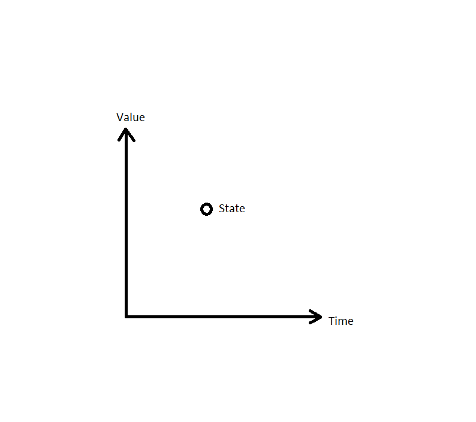
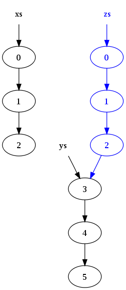
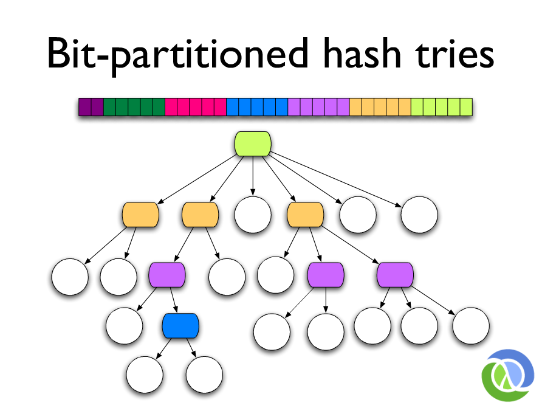

What about...
thinking about objects as
values
?
* identity
* state
* value
Note:
State is the value over time. Understanding
identity-state-value relationship is the key point to
understand these structures.
Identity?
An entity that we use to associate actions which are
related to the values over time.
> "State is a value of an identity at a time."
> \- Rich Hickey

- today
- numberOfStudents
- myLocation
Note:
Logical entities. In a particular point in time,
everything is frozen. Values do not change. Only the
state of the entities would change. Considering the
time as an atomic point in the flow of the states would
help on thinking about values. In a single point, the
state will not change.
Concurrency
is not
parallelism!
Variables do not work in concurrent systems.
Note:
Programs are not omnipotent, single/multi thread, one
at a time, locks, mutexes, semaphores.
Problems of using variables;
* operations on variables could be non-atomic.
* We cannot stop the world.
* composite operations require locks
* and locks are hard to maintain and scale
With immutable data, there is no need for locks.
Independent tasks can run without bothering others
because there is no way to change their state from outside.
How do we manipulate immutable data?
Let's see the following examples...
```
// let's say `setDay` is impletemented in a mutable way
// the date object will have another value, dangerous
date.setDay('3');
// let's say it is implemented in immutable way it
// creates an entire new object.
newDay = date.setDay('3'); // original date does not change
```
We have an immutable linked list;
```
a -> b -> c -> d
```
We want to replace `c` with `e`,
so we have to create a new
linked list for the sake of immutability.
```
a' -> b' -> e -> d'
```
Okay okay... I hear your voices...
Performance?
Persistent Data Structures
Let's say we have two linked lists;
```
xs = (0 -> 1 -> 2)
ys = (3 -> 4 -> 5)
zs = xs.concatenate(ys)
```

Reusing existing values!
Still... not good enough for huge vectors or deep trees
Hash Array Map Tries (HAMT)

- **Time Complexity:** `O(1)`
- **Space Complexity:** `O(lgn)`
Benefits of using Immutable Data in Web Applications
Modern Web Application UI State Handling
* Safer code
* Comparing UI elements' state difference is as easy as comparing
their references (e.g. `React.PureComponent`, Om library, Elm lang)
* Asynchronicity and Changing State Handling is easier to manage
* Easier debugging
* Back-tracking made easy with persistent data
* Undo / Redo
* e.g. Redux hot reloading, action replay, time travel
Additional Benefits
Immutable data can be used as a set's item, or map's key
by its reference.
const obj1 = {/* props1 */};
const obj2 = {/* props2 */};
// at a later stage...
const objComments = {
obj1: 'This object is a placeholder',
obj2: 'You need root previliges to access this obj'
};
Caching
- In a language, compiler-level optimizations could be done
- In a language, runtime object reference caching could be done
- e.g. python strings
- We already use this kind of caching in browsers!
- Shallow Comparison == Deep Comparison !
- No need for expensive deep copying.
- Fast *diff*s
- Easier to reason about the code (explicity)
- FREEDOM! We ensure nothing will break.
Any cons?
Still... Performance :) We can't just use these structures for all purposes.
Softwares using immutable data;
- Git
- Docker
- Clojure
- CouchDB
- Kafka
Key people who influenced me on this subject;
- John McCarthy
- Rich Hickey
- Joe Armstrong
- Alan Kay
Thanks :)
References:
- [Rich Hickey: Persistent Data Structures and Managed References](https://www.infoq.com/presentations/Value-Identity-State-Rich-Hickey)
- [Facebook: Optimizing Performance](https://facebook.github.io/react/docs/optimizing-performance.html)
- [Wikipedia: Persistent Data Structure](https://en.wikipedia.org/wiki/Persistent_data_structure)
- [Optimizing Dynamically-Typed Object-Oriented Languages With Polymorphic Inline Caches [paper]](http://www.selflanguage.org/_static/published/pics.pdf)